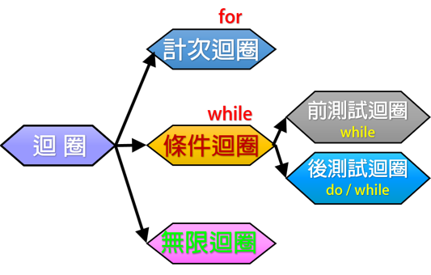
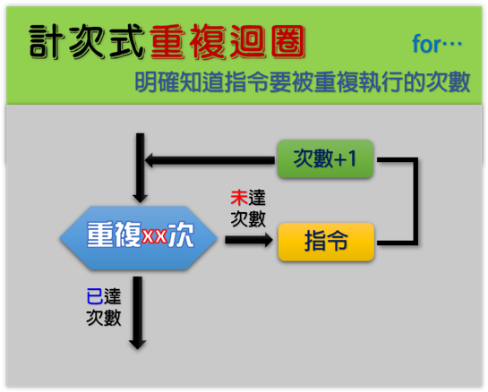
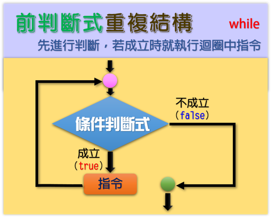
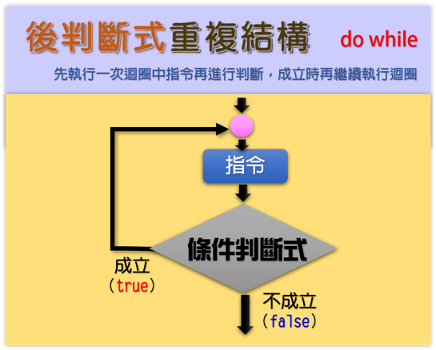
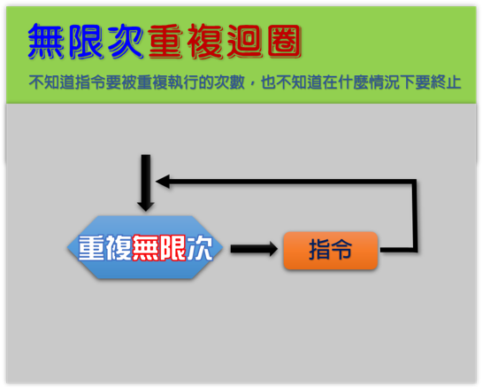

|
|
|---|
 重複結構
重複結構
「重複結構」或稱「循環結構」，也叫做「迴圈」（Loop）。它會按照該結構排列的程序，從第一塊積木開始，順序執行到最後一塊積木，然後回到第一塊積木，如此反復執行所有積木，直到符合或是不符合某一條件式時，才會離開重複執行的部份。
「重複結構」的程序可以節約積木，讓程序變得緊凑，提高了程序的重複利用率。
在使用「重複結構」時，除了讓程序能够反復執行以外，還需要考慮怎麽退出重複循環。
📌重複結構之流程圖：
「重複結構」的情境比較多元，一般可分為計次迴圈、條件迴圈以及無限迴圈三種。其中條件迴圈又可分為前測試迴圈和後測試迴圈二項，圖解示意如圖。

🎯計次迴圈：當程式的某段敘述必須重複執行，且已確定執行的次數時，就適用計次迴圈。

🎯條件迴圈：當程式中某段敘述必須重複執行，而且無法事先確定執行的次數時，就適用此類型的迴圈。


🎯無限迴圈：這是 Scratch 中最常見的，也是課程中最基礎的重複方式。當我們「未設想」何時要結束程式，多會使用「無限迴圈」。
